备注
点击此处下载完整示例代码
PyTorch 分析器与 TensorBoard 教程
创建于：2025 年 4 月 1 日 | 最后更新：2025 年 4 月 1 日 | 最后验证：2024 年 11 月 5 日
本教程演示了如何使用 TensorBoard 插件与 PyTorch Profiler 检测模型的性能瓶颈。
警告
现已弃用 TensorBoard 与 PyTorch Profiler 的集成。请使用 Perfetto 或 Chrome trace 查看 trace.json 文件。生成跟踪后，只需将 trace.json 拖入 Perfetto UI 或 chrome://tracing 以可视化您的配置文件。
简介
PyTorch 1.8 包含了一个更新的分析器 API，能够记录 CPU 端操作以及 GPU 端的 CUDA 内核启动。分析器可以在 TensorBoard 插件中可视化这些信息，并提供性能瓶颈的分析。
在本教程中，我们将使用一个简单的 Resnet 模型来演示如何使用 TensorBoard 插件来分析模型性能。
设置
安装 torch 和 torchvision 使用以下命令：
pip install torch torchvision
步骤 ¶
准备数据和模型
使用分析器记录执行事件
运行分析器
使用 TensorBoard 查看结果和分析模型性能
在分析器的帮助下提高性能
使用其他高级功能分析性能
额外实践：在 AMD GPU 上对 PyTorch 进行性能分析
1. 准备数据和模型
首先，导入所有必要的库：
import torch
import torch.nn
import torch.optim
import torch.profiler
import torch.utils.data
import torchvision.datasets
import torchvision.models
import torchvision.transforms as T
然后，准备输入数据。对于本教程，我们使用 CIFAR10 数据集。将其转换为所需格式，并使用 DataLoader 加载每个批次。
transform = T.Compose(
[T.Resize(224),
T.ToTensor(),
T.Normalize((0.5, 0.5, 0.5), (0.5, 0.5, 0.5))])
train_set = torchvision.datasets.CIFAR10(root='./data', train=True, download=True, transform=transform)
train_loader = torch.utils.data.DataLoader(train_set, batch_size=32, shuffle=True)
接下来，创建 Resnet 模型、损失函数和优化器对象。要在 GPU 上运行，将模型和损失移动到 GPU 设备。
device = torch.device("cuda:0")
model = torchvision.models.resnet18(weights='IMAGENET1K_V1').cuda(device)
criterion = torch.nn.CrossEntropyLoss().cuda(device)
optimizer = torch.optim.SGD(model.parameters(), lr=0.001, momentum=0.9)
model.train()
定义每个输入数据批次的训练步骤。
def train(data):
inputs, labels = data[0].to(device=device), data[1].to(device=device)
outputs = model(inputs)
loss = criterion(outputs, labels)
optimizer.zero_grad()
loss.backward()
optimizer.step()
2. 使用分析器记录执行事件
分析器通过上下文管理器启用，并接受多个参数，其中一些最有用的是：
可调用函数，该函数接受步长（int）作为单个参数，并在每个步骤返回要执行的剖析器操作。
在此示例中，使用
wait=1, warmup=1, active=3, repeat=1，剖析器将跳过第一个步骤/迭代，从第二个步骤开始预热，记录接下来的三个迭代，之后跟踪将可用，并且当设置 on_trace_ready 时将被调用。整个周期重复一次。TensorBoard 插件中的每个周期称为“span”。在
wait步骤中，性能分析器被禁用。在warmup步骤中，性能分析器开始跟踪但结果被丢弃。这是为了减少性能分析的开销。性能分析开始时的开销很高，很容易导致性能分析结果偏差。在active步骤中，性能分析器正常工作并记录事件。on_trace_ready- 每个周期结束时被调用的可调用对象；在这个例子中，我们使用torch.profiler.tensorboard_trace_handler来生成 TensorBoard 的结果文件。性能分析完成后，结果文件将保存在./log/resnet18目录中。将此目录指定为logdir参数以在 TensorBoard 中分析性能。record_shapes- 是否记录算子输入的形状。profile_memory- 跟踪张量内存分配/释放。注意，对于版本在 1.10 之前的旧版 PyTorch，如果您遇到长时间的性能分析，请禁用它或升级到新版本。记录操作源信息（文件和行号）。如果 TensorBoard 在 VS Code 中启动（参考），点击堆栈帧将导航到特定的代码行。
with torch.profiler.profile(
schedule=torch.profiler.schedule(wait=1, warmup=1, active=3, repeat=1),
on_trace_ready=torch.profiler.tensorboard_trace_handler('./log/resnet18'),
record_shapes=True,
profile_memory=True,
with_stack=True
) as prof:
for step, batch_data in enumerate(train_loader):
prof.step() # Need to call this at each step to notify profiler of steps' boundary.
if step >= 1 + 1 + 3:
break
train(batch_data)
此外，还支持以下非上下文管理器启动/停止方式。
prof = torch.profiler.profile(
schedule=torch.profiler.schedule(wait=1, warmup=1, active=3, repeat=1),
on_trace_ready=torch.profiler.tensorboard_trace_handler('./log/resnet18'),
record_shapes=True,
with_stack=True)
prof.start()
for step, batch_data in enumerate(train_loader):
prof.step()
if step >= 1 + 1 + 3:
break
train(batch_data)
prof.stop()
3. 运行分析器
运行上述代码。分析结果将保存到 ./log/resnet18 目录下。
使用 TensorBoard 查看结果和分析模型性能
备注
TensorBoard 插件支持已被弃用，因此其中一些功能可能无法像以前那样工作。请查看替代方案，HTA。
安装 PyTorch Profiler TensorBoard 插件。
pip install torch_tb_profiler
启动 TensorBoard。
tensorboard --logdir=./log
在谷歌 Chrome 浏览器或微软 Edge 浏览器中打开 TensorBoard 配置文件 URL（Safari 不支持）。
http://localhost:6006/#pytorch_profiler
您可以看到如下所示的 Profiler 插件页面。
概述
{kind=link}
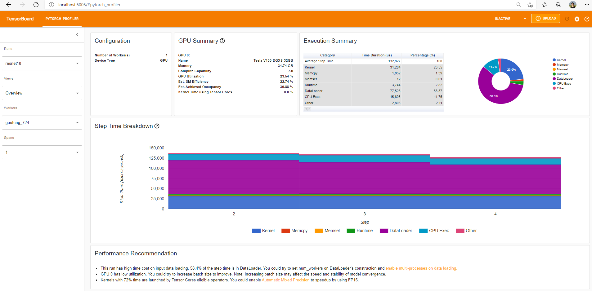
概述显示了模型性能的高级摘要。
“GPU 摘要”面板显示了 GPU 配置、GPU 使用情况和 Tensor Core 使用情况。在本例中，GPU 利用率较低。这些指标的详细信息如下。
“步骤时间细分”显示了在执行的不同类别中每个步骤花费的时间分布。在本例中，您可以看到 DataLoader 开销相当显著。
底部的“性能建议”使用分析数据自动突出显示可能的瓶颈，并提供可操作的优化建议。
您可以在左侧“视图”下拉列表中更改视图页面。
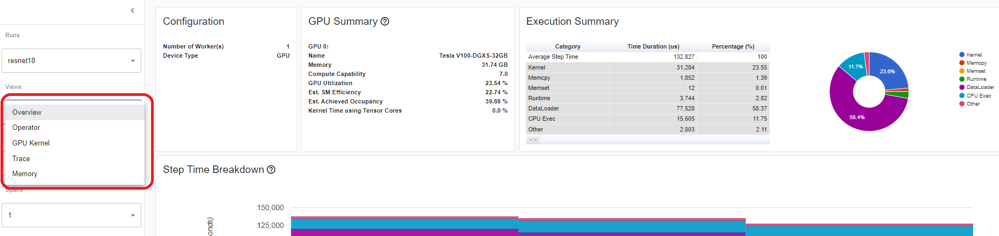
操作员视图
操作员视图显示在主机或设备上执行的所有 PyTorch 操作的性能。
{kind=link}
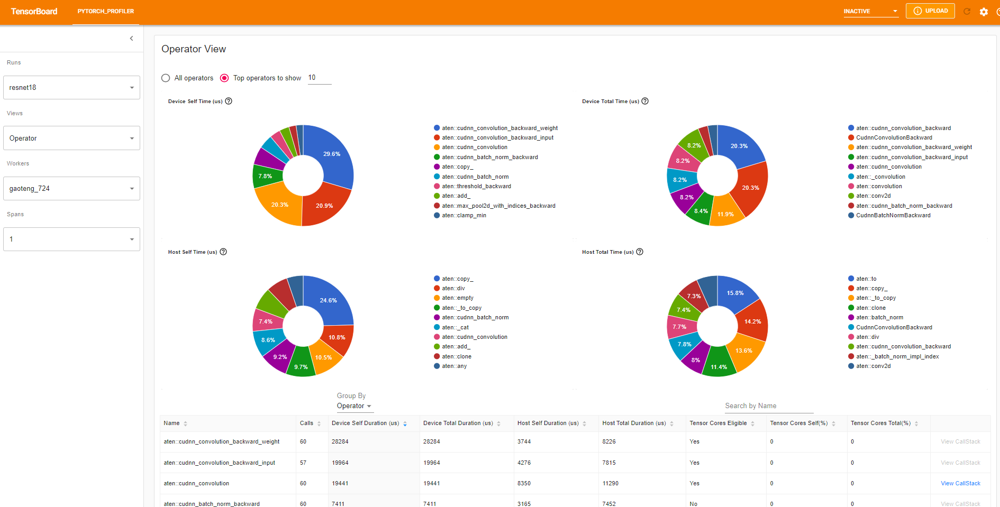
“自身”持续时间不包括其子操作的时间。“总”持续时间包括其子操作的时间。
查看调用栈
点击操作符的 View Callstack ，将显示具有相同名称但不同调用栈的操作符。然后点击子表中的 View Callstack ，将显示调用栈帧。
{kind=link}
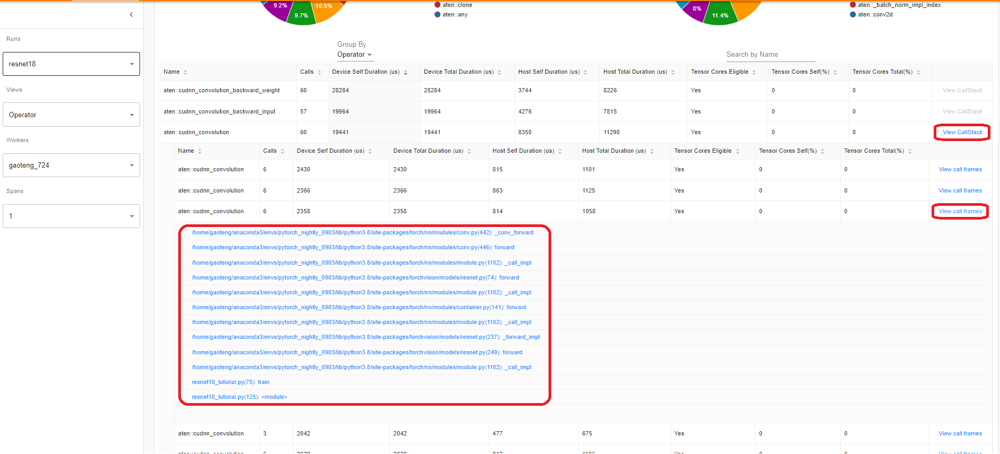
如果在 VS Code（启动指南）内部启动 TensorBoard，点击调用栈帧将导航到特定的代码行。
{kind=link}
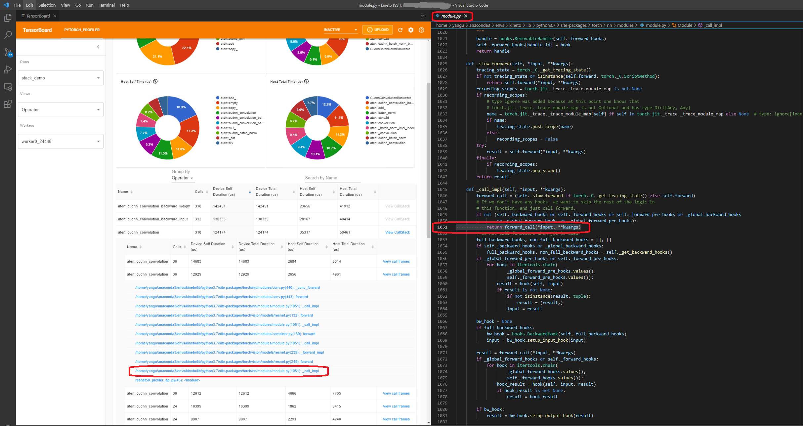
内核视图
GPU 内核视图显示了所有内核在 GPU 上花费的时间。
{kind=link}
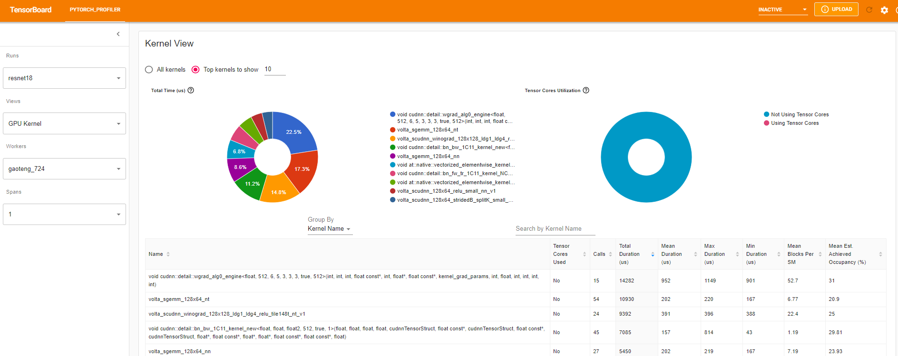
使用张量核心：此内核是否使用张量核心。
每 SM 平均块数：每 SM 块数 = 此内核的块数 / 此 GPU 的 SM 数量。如果这个数字小于 1，则表示 GPU 多处理器没有得到充分利用。“每 SM 平均块数”是所有此内核名称运行的加权平均值，使用每次运行的持续时间作为权重。
平均估计占用率：估计占用率在此列的工具提示中定义。对于大多数情况，例如内存带宽受限的内核，越高越好。“平均估计占用率”是所有该内核名称运行的平均值，使用每个运行的持续时间作为权重。
跟踪视图
跟踪视图显示了已分析操作符和 GPU 内核的时间线。您可以选择它以查看以下详细信息。
{kind=link}
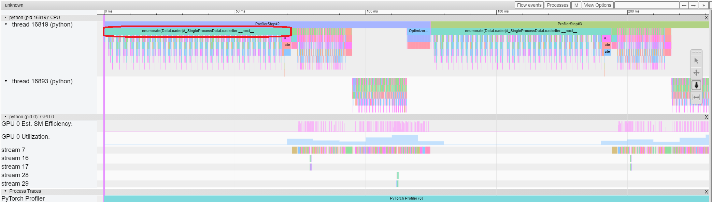
您可以使用右侧工具栏移动图表并放大/缩小。键盘也可以用于在时间线内缩放和移动。'w'和's'键在鼠标周围放大，'a'和'd'键将时间线向左和向右移动。您可以多次按这些键，直到看到可读的表示。
如果反向操作器的“流入”字段值为“正向对应反向”，则可以点击文本以获取其启动的正向操作器。
{kind=link}
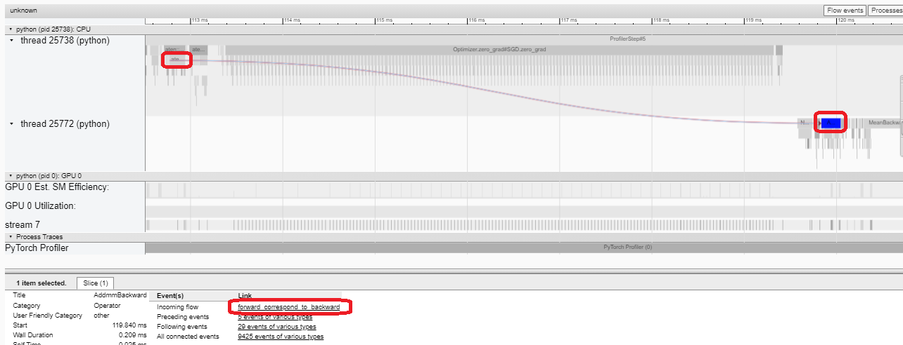
在这个例子中，我们可以看到以 enumerate(DataLoader) 为前缀的事件花费了很多时间。在这段时间的大部分时间里，GPU 处于空闲状态。因为此函数在主机端加载数据和转换数据，期间 GPU 资源被浪费。
5. 在分析器的帮助下提高性能
在“概览”页面的底部，“性能建议”中的建议表明瓶颈是 DataLoader 。PyTorch DataLoader 默认使用单进程。用户可以通过设置参数 num_workers 来启用多进程数据加载。以下是更多详细信息。
在本例中，我们遵循“性能推荐”并设置 num_workers 如下，传递不同的名称如 ./log/resnet18_4workers 到 tensorboard_trace_handler ，然后再次运行。
train_loader = torch.utils.data.DataLoader(train_set, batch_size=32, shuffle=True, num_workers=4)
然后让我们选择左侧“运行”下拉列表中的最近配置的运行。
{kind=link}
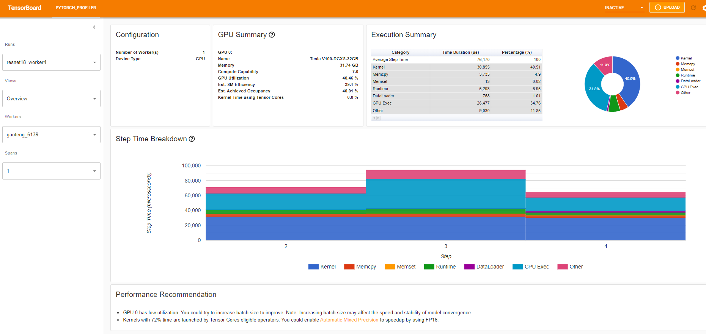
从上述视图可以看出，与之前的 132ms 相比，步骤时间减少了约 76ms， DataLoader 的时间减少主要贡献于此。
{kind=link}
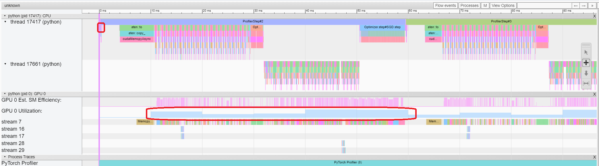
从上述视图可以看出， enumerate(DataLoader) 的运行时间减少了，GPU 利用率提高了。
使用其他高级功能分析性能 ¶
内存视图
要分析内存，必须在 torch.profiler.profile 的参数中将 profile_memory 设置为 True 。
您可以通过使用 Azure 上的现有示例来尝试
pip install azure-storage-blob
tensorboard --logdir=https://torchtbprofiler.blob.core.windows.net/torchtbprofiler/demo/memory_demo_1_10
分析器记录了所有内存分配/释放事件以及分析期间分配器的内部状态。内存视图由以下三个组件组成。
{kind=link}
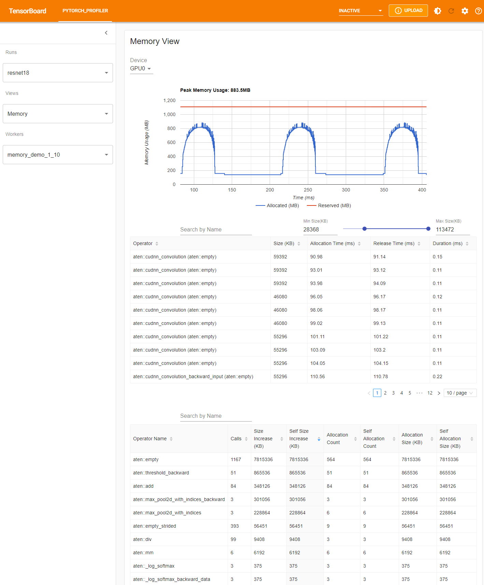
这些组件依次为内存曲线图、内存事件表和内存统计表，从上到下排列。
可以在“设备”选择框中选择内存类型。例如，“GPU0”表示以下表格仅显示每个操作符在 GPU 0 上的内存使用情况，不包括 CPU 或其他 GPU。
内存曲线显示了内存消耗的趋势。“已分配”曲线显示了实际使用的总内存，例如张量。在 PyTorch 中，CUDA 分配器和一些其他分配器采用了缓存机制。“已保留”曲线显示了分配器保留的总内存。您可以通过在图上左键单击并拖动来选择所需范围内的事件：
{kind=link}
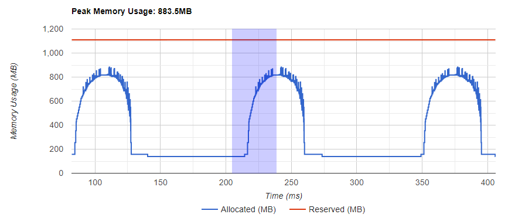
选择后，三个组件将在限制时间范围内更新，以便您可以获取更多相关信息。通过重复此过程，您可以放大到非常精细的细节。右键单击图表将重置图表到初始状态。
{kind=link}
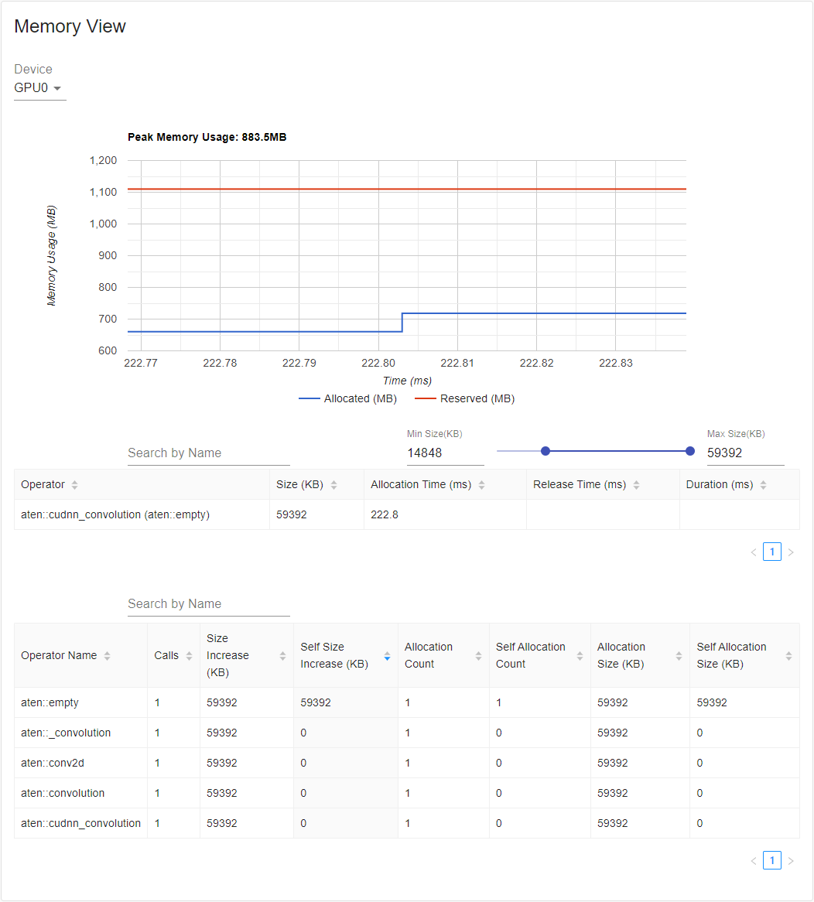
在内存事件表中，分配和释放事件配对成一个条目。 “操作员”列显示导致分配的即时 ATen 操作符。请注意，在 PyTorch 中，ATen 操作符通常使用 aten::empty 进行内存分配。例如， aten::ones 实现为 aten::empty 之后跟着一个 aten::fill_ 。仅显示操作符名称 aten::empty 帮助不大。在特殊情况下，它将显示为 aten::ones (aten::empty) 。如果事件发生在时间范围之外，“分配时间”、“释放时间”和“持续时间”列的数据可能缺失。
在内存统计表中，“大小增加”列汇总了所有分配大小并减去所有内存释放大小，即在此操作符之后的内存使用净增加。 “自身大小增加”列与“大小增加”类似，但不计算子操作符的分配。关于 ATen 操作符的实现细节，一些操作符可能会调用其他操作符，因此内存分配可以在调用栈的任何级别发生。也就是说，“自身大小增加”仅计算调用栈当前级别的内存使用增加。最后，“分配大小”列汇总了所有分配，不考虑内存释放。
分布式视图
插件现在支持使用 NCCL/GLOO 作为后端在 DDP 分析中的分布式视图。
您可以通过使用 Azure 上的现有示例来尝试：
pip install azure-storage-blob
tensorboard --logdir=https://torchtbprofiler.blob.core.windows.net/torchtbprofiler/demo/distributed_bert
{kind=link}
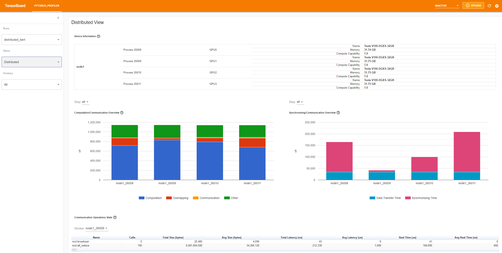
“计算/通信概览”显示了计算/通信比及其重叠程度。从这一视角，用户可以了解工人之间的负载均衡问题。例如，如果一个工人的计算+重叠时间远大于其他工人，可能存在负载均衡问题，或者这个工人可能是落后者。
“同步/通信概览”显示了通信效率。“数据传输时间”是实际数据交换的时间。“同步时间”是等待与其他工人同步的时间。
如果一个工人的“同步时间”远短于其他工人，这个工人可能是落后者，可能比其他工人有更多的计算工作量。
“通信操作统计”总结了每个工人中所有通信操作的详细统计数据。
7. 额外实践：在 AMD GPU 上分析 PyTorch ¶
AMD ROCm 平台是一个为 GPU 计算设计的开源软件堆栈，包括驱动程序、开发工具和 API。我们可以在 AMD GPU 上运行上述步骤。在本节中，我们将使用 Docker 安装 ROCm 基础开发镜像，然后再安装 PyTorch。
为了举例，让我们创建一个名为 profiler_tutorial 的目录，并将步骤 1 中的代码保存为 test_cifar10.py 在该目录中。
mkdir ~/profiler_tutorial
cd profiler_tutorial
vi test_cifar10.py
在撰写本文时，ROCm 平台上的稳定（ 2.1.1 ）Linux 版本 PyTorch 是 ROCm 5.6。
从 Docker Hub 获取安装了正确用户空间 ROCm 版本的基 Docker 镜像。
它是 rocm/dev-ubuntu-20.04:5.6 。
启动 ROCm 基 Docker 容器：
docker run -it --network=host --device=/dev/kfd --device=/dev/dri --group-add=video --ipc=host --cap-add=SYS_PTRACE --security-opt seccomp=unconfined --shm-size 8G -v ~/profiler_tutorial:/profiler_tutorial rocm/dev-ubuntu-20.04:5.6
在容器内安装安装 wheels 包所需的任何依赖项。
sudo apt update
sudo apt install libjpeg-dev python3-dev -y
pip3 install wheel setuptools
sudo apt install python-is-python3
安装轮子：
pip3 install torch torchvision torchaudio --index-url https://download.pytorch.org/whl/rocm5.6
安装
torch_tb_profiler，然后，运行 Python 文件test_cifar10.py：
pip install torch_tb_profiler
cd /profiler_tutorial
python test_cifar10.py
现在，我们已经拥有了在 TensorBoard 中查看所需的所有数据：
tensorboard --logdir=./log
根据第 4 步的说明选择不同的视图。例如，下面是操作员视图：
{kind=link}
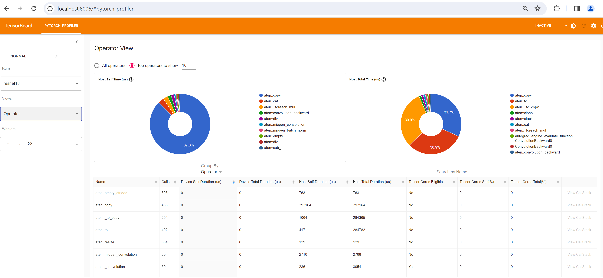
在撰写本节时，Trace 视图无法正常工作，显示为空。您可以通过在 Chrome 浏览器中输入 chrome://tracing 来解决这个问题。
将
trace.json文件复制到~/profiler_tutorial/log/resnet18目录下的 Windows 中。
如果文件位于远程位置，您可能需要使用 scp 来复制文件。
点击“加载”按钮，从浏览器中的
chrome://tracing页面加载 trace JSON 文件。
{kind=link}
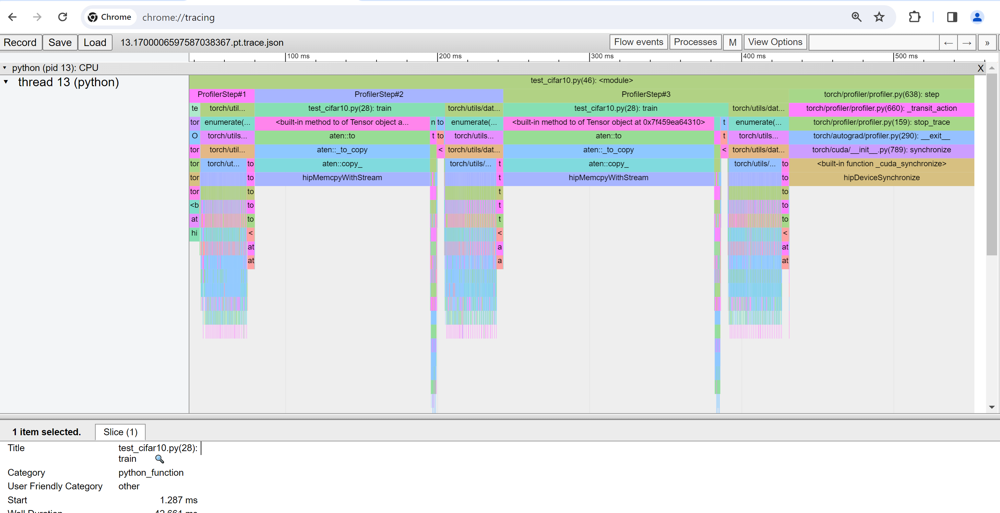
如前所述，您可以移动图表并放大缩小。您还可以使用键盘来放大和缩小时间轴。 w 和 s 键在鼠标位置周围放大， a 和 d 键左右移动时间轴。您可以多次按这些键，直到看到可读的表示。
了解更多 ¶
查看以下文档以继续学习，并在此处自由提出问题。
脚本总运行时间：（0 分钟 0.000 秒）